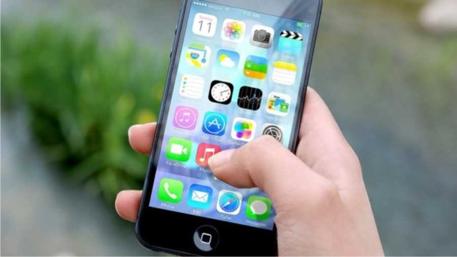
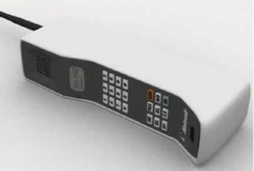
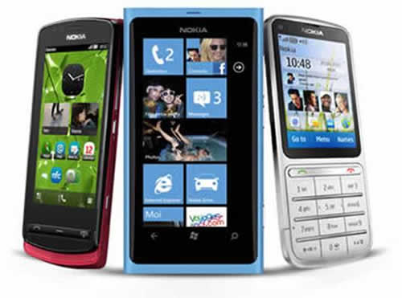
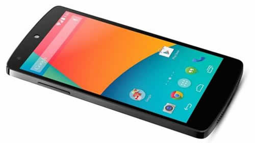
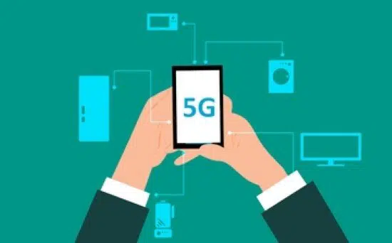
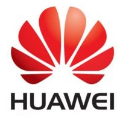

¿Porqué se llama teléfono celular?
-
Las partes de un teléfono celular tradicional son las siguientes:
- placa de circuito
- antena
- teclado
- pantalla LCD - display de cristal líquido
- batería
- micrófono
- altavoz
Principales fabricantes de teléfonos celulares
- Apple
- Samsung
- Motorola
- Huaweii
- Sony
- LG
- HTC
- Nokia
- Alcatel
- ZTE
-
Generaciones de celulares
- Primera generación de celulares
- 2G: La segunda generación
- 2.5G: La generación de transición
- 3G: La tercera generación
- Smartphones y 4G
- Smartphones y 5G
Los teléfonos celulares son así llamados básicamente porque el área física que cubren tiene un formato de células. El origen del teléfono celular se dice que fue allá por el año 1973 cuando la compañía de electrónica de consumo masivo Motorola lanzó al mercado el primer teléfono celular portátil, que fue comercializado con el nombre de Motorola DynaTac 8000X.
La mayoría de los modelos populares de teléfonos celulares en el mercado son producidos por
La primera generación de teléfonos celulares surge con la aparición en el mercado mundial del conocido "ladrillo" (DynaTac 8000X) a fines de los años 80. Estos equipos tenían tecnología analógica para uso restringido de comandos de voz. La tecnología predominante de esta generación fue la AMPS (Advanced Mobile Phone System
La introducción del sistema 2G hizo posible la simplificación en la manufactura de los teléfonos celulares, que redujeron su tamaño y comenzaron a ser fabricados con materiales más económicos, lo que significó una verdadera disminución en los costes de fabricación, y por ende surgió un mayor consumo de los dispositivos, que se comenzaron a comercializar a valores asequibles para el público en general.
Con la llegada de la tecnología de Segunda Generación al mundo de las comunicaciones móviles, también desembarcó en los dispositivos portátiles de telefonía celular el popular sistema GSM, siglas de su nombre en inglés Global System for Mobile Communications, que en español significa Sistema Global para las Comunicaciones
Gracias a la llegada de la 2.5G, los dispositivos móviles incluyeron dos nuevos servicios. Por un lado el sistema denominado EMS, que básicamente se trataba de un servicio de mensajería mejorado, que entre sus prestaciones permitía incluir dentro de los mensajes algunas melodías e iconos. Para ello, los EMS fueron basados en lo que posteriormente serían los SM
Cabe destacar que el sistema GPRS, siglas de su nombre en inglés General Packet Radio Service, ofrece una velocidad de transferencia de datos de 56kbps a 114 kbps, mientras que la tecnología EDGE, Enhaced Data rates for GSM Evolution, permite alcanzar 384 Kbps en velocidad de transferencia
Con el advenimiento de la Tercera Generación, fruto de la investigación para lograr aumentar la capacidad de transmisión y recepción de datos, además de obtener un mejor grado de seguridad en las comunicaciones, fue posible poder contar con la posibilidad de conectarse a Internet con todas las ventajas que su utilización provee para los usuarios.
Si bien la expansión de la tecnología 3G en un principio fue lenta, lo cierto es que actualmente ha sido ampliamente aceptada y su constante avance posibilitó el desarrollo de un nuevo sistema, el denominado UMTS (Universal Mobile Telecommunications System).
No cabe duda que la aparición en el mercado del standard de comunicaciones 4G, cambió para siempre el modo en que los usuarios de teléfonos celulares usan su dispositivo. A tal punto esto es así que la telefonía de consumo de entretenimiento tal como la conocemos en la actualidad no podría existir.
La unión del smartphone, una impresionante mezcla entre teléfono y computadora, y este nuevo estándar de comunicaciones, sin duda alguna rompió el esquema de consumo de contenidos al cual estábamos acostumbrados desde hace años, ya que gracias a la velocidad de transmisión de datos que puede alcanzar 4G podemos consumir sin ninguna clase de problemas contenidos de video en alta definición, música en streaming y mil cosas más, además de que por supuesto todo lo que tenga que ver con nuestro trabajo lo podremos realizar varias veces más rápido y sin tantas complicaciones, en el lugar y momento en donde nos encontremos, puntos que hoy son vitales para el desenvolvimiento diario de millones de personas alrededor del mundo.
Con la aparición y masificación de la tecnología de conectividad 4G a principios de la década de 2010, el panorama de las comunicaciones cambió para siempre, ya que como vimos más arriba en este mismo post, las ventajas con relación a las anteriores tecnologías eran increíbles, desde que la calidad del enlace era estable, fluido y rápido, todos hechos que consiguieron que 4G/LTE se extendiera hacia todos los rincones donde era técnicamente posible.
Una vez que la tecnología 5G se haya implementado en todas los estratos de la sociedad, los usuarios podrán navegar por Internet a velocidades de hasta 20 Gbps, con los beneficios de poder disfrutar de contenidos en alta definición sin saltos ni fluctuaciones. Además se verán beneficiados otros procesos un poco más transparentes para el usuario, como por ejemplo el proceso de datos de organizaciones y empresas, que también se traducen en mejores servicios para el usuario.
A continuacion se muestran enlaces de las marcas mas importantes de celulares para descubrir modelos y caracteristicas
|  | |